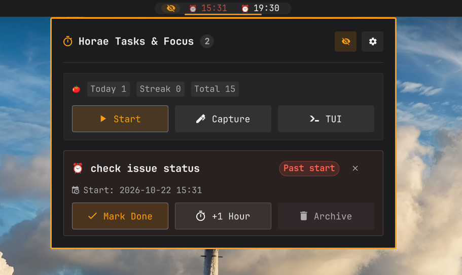
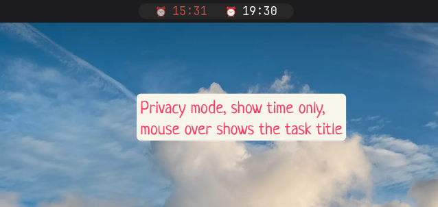
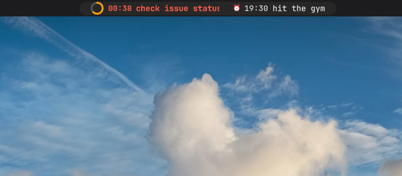
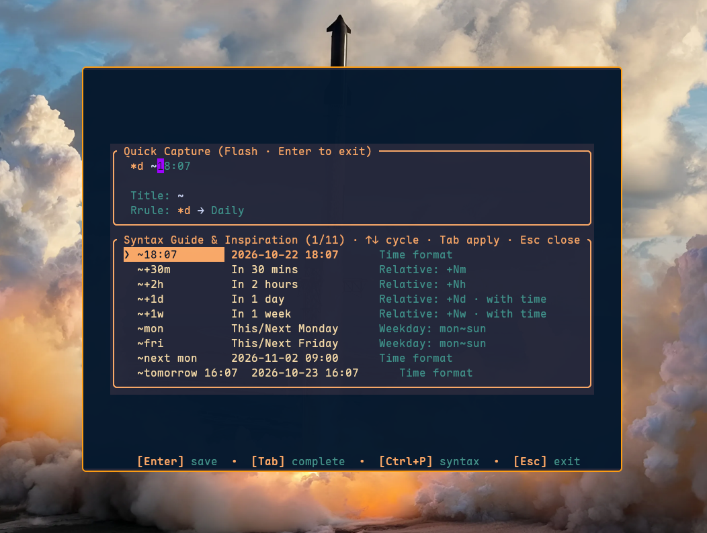
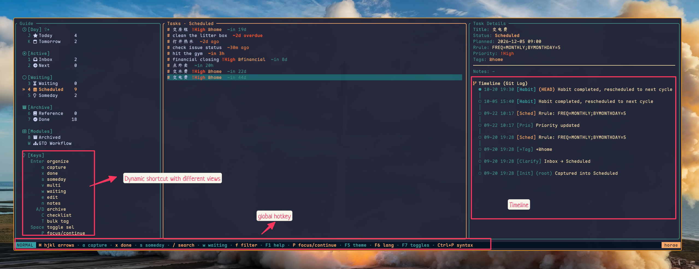
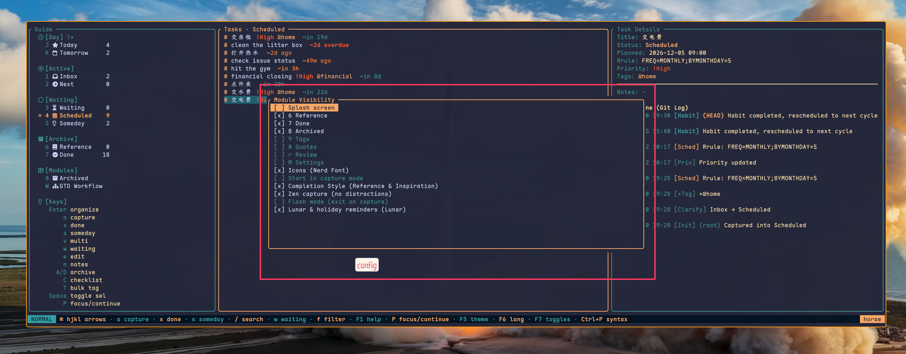

专注，进入极致心流。
GTD 任务与原生番茄钟。
深度联动 Horae CLI 引擎。事件驱动毫秒级响应、状态栏动态进度圆环、一键闪念录入、2×2 番茄参数即时微调，以及极简弹窗任务流控制。

让任务自然流动，让专注不被打扰
每一个像素、每一行逻辑都为了极致的速度与沉浸体验而雕琢。
任务原生番茄钟仪表
正在专注的任务自动置顶，图标变为实时缩减的动态微型进度圆环（PomoRing），并展示秒级倒计时；专注结束与休息周期全自动无缝衔接。
闪念极速录入 (Flash)
左击番茄钟图标秒级唤起居中浮动终端；支持自然时间语法、优先级与智能补全。
2×2 番茄参数微调
点击齿轮展开 2×2 数字微调框，即刻调整专注时长、短休、长休与轮数并实时同步。
隐私模式与中英双语
屏幕共享或会议时，悬停一键隐藏任务标题仅保留排程时间；内置优雅无缝滑动切换中英文支持，国际化体验流畅自然。
真实环境实机演示
点击任意图片即可查看高清全尺寸细节截图。

01. 隐私模式
开会或者录屏时，开启隐私模式可隐藏待办标题，仅提示时间和是否到期，鼠标悬浮再显示标题。
02. 隐私模式关闭
正常显示待办详情，清晰呈现排程时间、状态彩色胶囊徽章与平滑横向滚动。
03. 交互弹窗
左键插件进入交互弹窗，可管理指定任务，右上角可进入参数设置和中英文切换。

04. 专注模式
任务原生番茄钟仪表，大字实时倒计时、呼吸微光进度圆环、阶段徽章与长休轮数进度点。

05. 闪念录入
亚秒级启动悬浮终端，提供语法指引，键盘输入减少摩擦；包含周期、时间与标签补全参考。

06. TUI 终端应用
状态栏与 TUI 全功能无缝互通，键盘驱动用户心流从不中断。

07. TUI 配置管理
全套番茄钟与 GTD 规则集中配置，与插件双向无缝联动实时生效。
拒绝每秒轮询，真正事件驱动
传统桌面组件往往通过每秒钟 spawn 外部进程来刷新倒计时与任务，消耗大量 CPU 和唤醒能耗。Horae for Omarchy Shell 采用先进的时间戳本地推算与文件监听机制：
- 时间戳本地运算：倒计时基于 session 开始与结束时间戳进行纯本地数学计算，完全不派生外部进程。
- 毫秒级文件监听：通过 FileView 监听 pomo.json 与 horae.db，核心引擎有更新时瞬时响应。
- 智能保底校准：60 秒慢速保底定时器捕获跨越周期的到期事件，始终保证数据绝对准确。
{
"phase": "work",
"task_title": "季度系统性能分析报告",
"start_ts": 1792495950810,
"end_ts": 1792496070849,
"total_count": 10,
"today_count": 5,
"config": {
"work_mins": 25,
"short_break_mins": 5
}
}
快速安装与配置
提供一键脚本自动化安装，或通过 Omarchy 官方 CLI 进行扩展集成。
cargo install --git https://github.com/zhaohang1205/horae.git --rev c4c428bcff928758efb58d8687891e58b55d5c6agit clone https://github.com/zhaohang1205/horae_for_omarchy_shell.git
cd horae_for_omarchy_shell
./install.shomarchy plugin add https://github.com/zhaohang1205/horae_for_omarchy_shell.git --enable